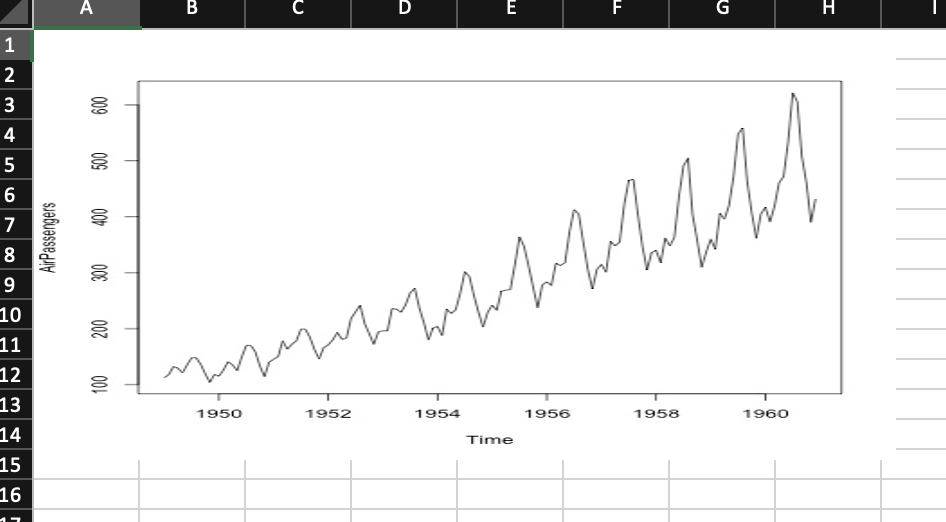
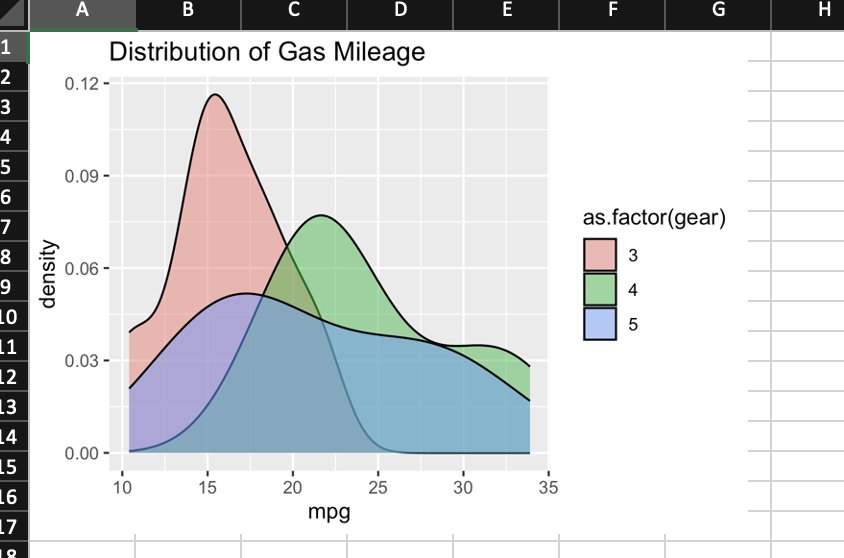
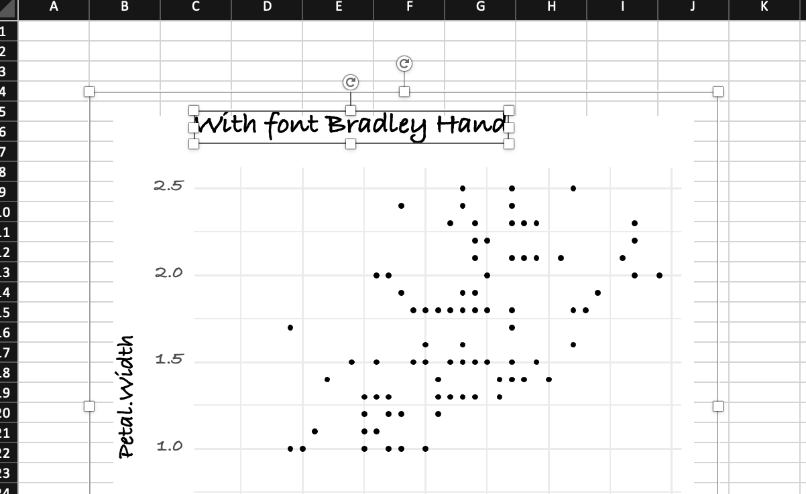
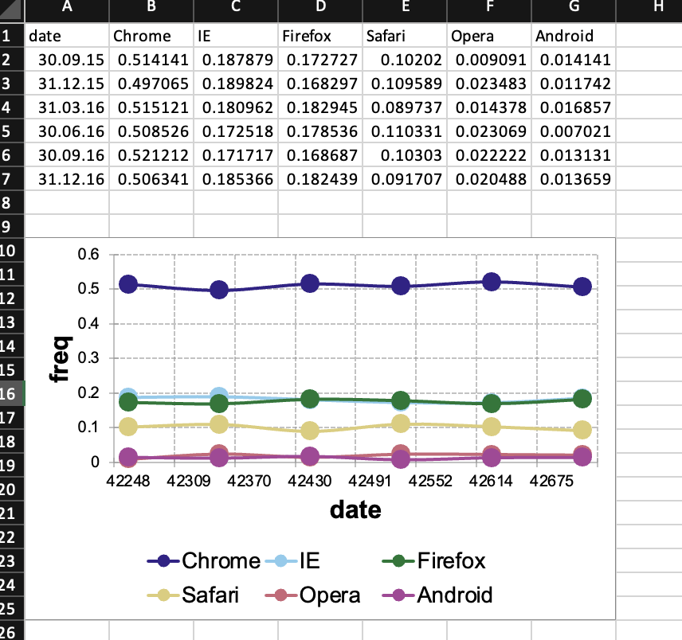
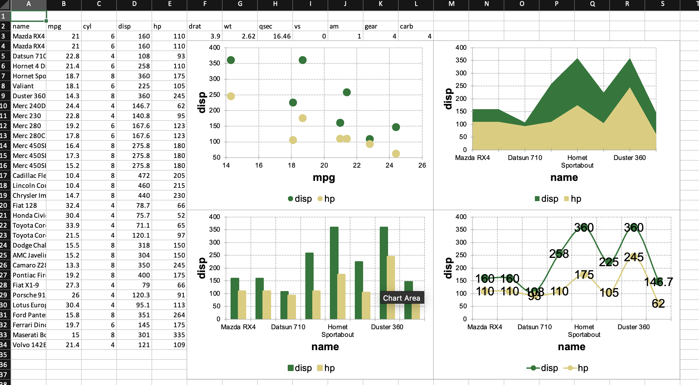
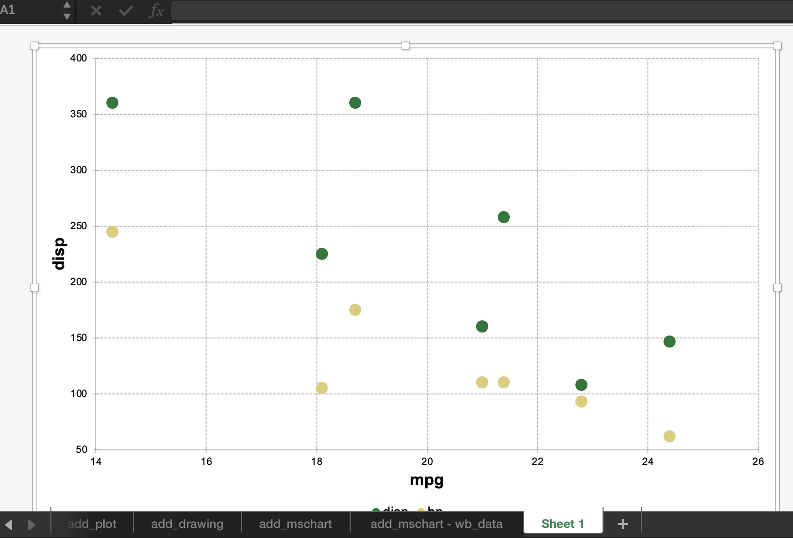

library(openxlsx2) # openxlsx2 >= 0.4 for mschart and rvg support
## create a workbook
wb <- wb_workbook()6 Charts
The following manual will present various ways to add plots and charts to openxlsx2 worksheets and even chartsheets. This assumes that you have basic knowledge how to handle openxlsx2 and are familiar with either the default R graphics functions like plot() or barplot() and grDevices, or with the packages {ggplot2}, {rvg} or {mschart}. There are plenty of other manuals that cover using these packages better than we could ever tell you to.
6.1 Adding a chart as an image to a workbook
You can include any image in PNG or JPEG format. Simply open a device and save the output and pass it to the worksheet with wb_add_image().
myplot <- tempfile(fileext = ".jpg")
jpeg(myplot)
print(plot(AirPassengers))
#> NULL
dev.off()
#> png
#> 2
# Add basic plots to the workbook
wb$add_worksheet("add_image")$add_image(file = myplot)
6.2 Adding {ggplot2} plots to a workbook
You can include {ggplot2} plots similar to how you would include them with openxlsx. Call the plot first and afterwards use wb_add_plot().
library(ggplot2)
print(ggplot(mtcars, aes(x = mpg, fill = as.factor(gear))) +
ggtitle("Distribution of Gas Mileage") +
geom_density(alpha = 0.5))
# Add ggplot to the workbook
wb$add_worksheet("add_plot")$
add_plot(width = 5, height = 3.5, fileType = "png", units = "in")
6.3 Adding plots via {rvg}
If you want vector graphics that can be modified in spreadsheet software the dml_xlsx() device comes in handy. You can pass the output via wb_add_drawing().
library(rvg)
## create rvg example
tmp <- tempfile(fileext = ".xml")
dml_xlsx(file = tmp, fonts = list(sans = "Bradley Hand"))
print(ggplot(data = iris,
mapping = aes(x = Sepal.Length, y = Petal.Width)) +
geom_point() + labs(title = "With font Bradley Hand") +
theme_minimal(base_family = "sans", base_size = 18))
dev.off()
#> png
#> 2
# Add rvg to the workbook
wb$add_worksheet("add_drawing")$
add_drawing(xml = tmp)$
add_drawing(xml = tmp, dims = NULL)
6.4 Adding {mschart} plots
If you want native open xml charts, have a look at {mschart}. Create one of the chart files and pass it to the workbook with wb_add_mschart().
There are two options possible.
Either the default
{mschart}output identical to the one in{officer}. Passing a data object and let{mschart}prepare the data. In this casewb_add_mschart()will add a new data region.Passing a
wb_data()object to{mschart}. This object contains references to the data on the worksheet and allows using data “as is”.
6.4.1 Add chart and data
library(mschart)
## create chart from mschart object (this creates new input data)
mylc <- ms_linechart(
data = browser_ts,
x = "date",
y = "freq",
group = "browser"
)
wb$add_worksheet("add_mschart")$add_mschart(dims = "A10:G25", graph = mylc)
## create chart referencing worksheet cells as input
# write data starting at B2
wb$add_worksheet("add_mschart - wb_data")$
add_data(x = mtcars, dims = "B2")$
add_data(x = data.frame(name = rownames(mtcars)), dims = "A2")
6.4.2 Add chart using wb_data()
These are native spreadsheet charts that are dynamic in terms of the data visible on the sheet. It is therefore possible to hide columns or rows of the data, e.g. with groups, so that the chart shows more data when a group is expanded.
# create wb_data object this will tell this mschart
# from this PR to create a file corresponding to openxlsx2
dat <- wb_data(wb, dims = "A2:G10")
# create a few mscharts
scatter_plot <- ms_scatterchart(
data = dat,
x = "mpg",
y = c("disp", "hp")
)
bar_plot <- ms_barchart(
data = dat,
x = "name",
y = c("disp", "hp")
)
area_plot <- ms_areachart(
data = dat,
x = "name",
y = c("disp", "hp")
)
line_plot <- ms_linechart(
data = dat,
x = "name",
y = c("disp", "hp"),
labels = c("disp", "hp")
)
# add the charts to the data
wb <- wb %>%
wb_add_mschart(dims = "F4:L20", graph = scatter_plot) %>%
wb_add_mschart(dims = "F21:L37", graph = bar_plot) %>%
wb_add_mschart(dims = "M4:S20", graph = area_plot) %>%
wb_add_mschart(dims = "M21:S37", graph = line_plot)
6.4.3 Add and fill a chartsheet
Finally it is possible to add mschart charts on a so called chartsheet. These are special sheets that contain only a chart object, referencing data from another sheet.
# add chartsheet
wb <- wb %>%
wb_add_chartsheet() %>%
wb_add_mschart(graph = scatter_plot)